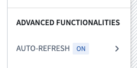
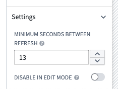

Workshop auto-refresh allows builders to easily create applications that automatically update as data changes in Foundry. Providing reliable, up-to-date information to users is critical for supporting operational workflows, and Workshop makes this possible in a just few clicks.
With auto-refresh, you can register object sets within a module to be watched for updates from anywhere in Foundry. When an update occurs, all data in the current module will automatically refresh without user interaction. Examples of update sources include ontology data updates due to Actions taken by other users, edits from an upstream data integration, or new records from a streaming data source. In these cases, auto-refresh will update the data in the current module.
Auto-refresh is valuable in cases where data freshness is a priority, including but not limited to live dashboards and collaborative workflows.
To surface data recency directly in your module's UI, use the Data Freshness widget. It displays a last updated timestamp for configured object types and their datasources based on the most recent index time, rendering relative times for updates within 24 hours (for example, "2 hours ago") and absolute times for updates older than 24 hours (for example, "Thu, Jul 17, 2025, 1:52 PM").
You can enable Auto-refresh within a specific Workshop module. Navigate to the Auto-refresh configuration options toward the bottom of the Settings panel in the Workshop editor.

:::callout{theme="neutral"} Auto-refresh may trigger an increased data load volume and associated costs. Builders may choose not to enable the feature for workflows where live data is less necessary. :::

To update auto-refresh settings, select Auto-refresh in the Settings panel. Then expand the Settings section on the bottom of the panel.
This setting allows a module builder to configure the minimum amount of time between data refreshes. This setting will not impact initial refresh latency, but rather ensure that a module is not constantly reloading. The current minimum, or most frequent, refresh rate is 10 seconds, which ensures stability of services due to the increased load from auto-refreshing.
This setting allows module builders to turn off Auto-refresh behavior while in edit mode. A builder may wish to use this if auto-refreshing data in edit mode distracts from the building experience or is not needed. Auto-refresh will remain configured and active in view mode with this setting enabled.
You can let users pause or resume the application of auto-refresh updates during a session by configuring Workshop events, such as through a Button Group widget:
Learn more about Events: Module state.
Auto-refresh is limited to OSv2-backed object types. This limitation includes object sets with linked objects of OSv1-backed object types used in the object set definition.
Learn more about migrating from OSv1 to OSv2.
Workflows involving user input are not prohibited in modules that use auto-refresh. However, you may run into the issue where variable or widget state is reset after refreshing. To work around this, you should avoid using automatic recompute behavior in variables that experience this issue. For cases where this is not enough, you can use the iFrame widget to embed a separate module that acts as a sandboxed environment that will not auto-refresh. You can set a URL query parameter embedded=true to hide the Foundry sidebar. Another method is to have a separate Workshop module that opens in a new browser or Carbon tab to complete parts of the workflow that involve user input.
Auto-refresh does not automatically watch for updates of linked object types. This means linked object properties and linked object aggregations of a watched object set will not auto-refresh unless the linked object type is also explicitly watched.
:::callout{theme="neutral"} To trigger auto-refresh for linked object properties or function-backed columns, use the linked object type variable in a simple widget like an Object Set Title widget and place it in a section with zero height or width. This allows the refresh to be triggered without displaying the widget to users. :::
Some object set filter types are not currently supported by Auto-refresh, such as terms, phrase, multiMatch, prefixOnLastToken, and objectSetLink. Support for these filter types may be added in the future.
Use supported filter types to limit refreshes to specific objects. For example, filter an object set by its primary key so the module refreshes only when that object changes.
As a workaround for unsupported filter types, you can watch an unfiltered object set of the same type. This may cause refreshing to happen more often than is necessary but should otherwise ensure that the object type is kept up to date within a module.
Currently, object sets that have Auto-refresh enabled need to be used within a visible widget in a module to trigger an auto-refresh. This prevents automatic refreshes being triggered when the object set being watched for updates is not on screen. For example, if a registered object set is only used within a hidden drawer, auto-refresh will only occur while that drawer is open.
If an auto-refresh notification occurs while a variable is hidden, it will be delayed until the variable becomes visible again, at which point a reload will immediately be triggered.
This behavior also applies if the browser tab is minimized, or is not the currently active tab.
Embedding a Workshop module does not carry over the auto-refresh configuration of the embedded module. Auto-refresh must be explicitly configured for every module that you intend to use auto-refresh with. This also means that auto-refresh will not work specifically within the context of the embedded module.
To embed a module that will auto-refresh inside a parent module that does not auto-refresh, you can use the iFrame widget to embed a separate module that acts as a sandboxed environment that will auto-refresh. You can set a URL query parameter embedded=true to hide the Foundry sidebar.
If any errors occur that appear to be referencing auto-refresh issues, consider the following:
InvalidObjectSetForPlanning: A watched object set contains a reference to an entity (either an object type or link type) indexed in Object Storage v1.